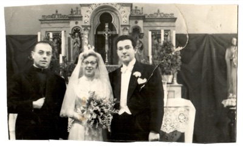
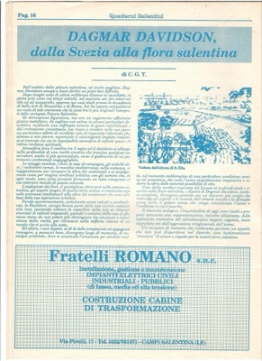
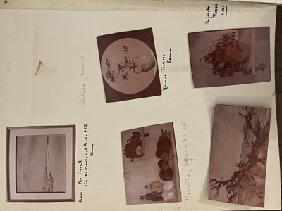

Media e memorie
Fotografia

Celebrazione del matrimonio tra Dagmar Davidson e Alfredo Calabrese - Svezia, 1955
Media e memorie › Fotografia · 2 fogli

Ritaglio stampa

Quaderni Salentini 1989
Media e memorie › Ritaglio stampa


Mostre e registro delle opere


Pagina registro opere
Media e memorie › Mostre e registro delle opere
Evento

Rauccio 2022
Media e memorie › Evento
Audio e video
Nessuna opera ancora in archivio per questa categoria.